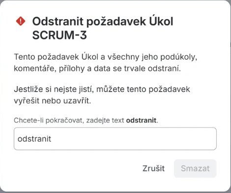
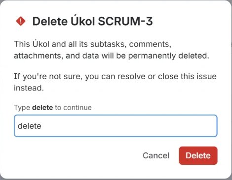
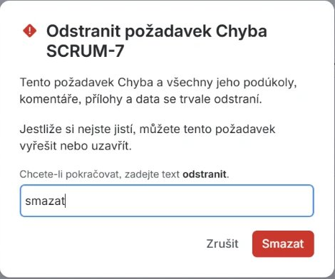
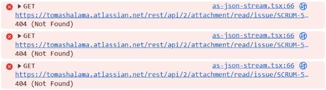

Posouvám se do testování softwaru po 7 letech v koordinaci procesů, operations a účetnictví —
z práce, kde se denně hlídá přesnost dat, dodržují se postupy a problémy se jasně reportují.
Komerční praxi v testování zatím nemám, zato mám za sebou kompletní cyklus na reálné aplikaci:
od ručního hledání chyb přes bug reporty a API testy až po ověřování dat v databázi a návrh testovacích případů.
Pozornost k detailu a přesnost dat. Roky v účetnictví a koordinaci procesů mě naučily všímat si nesrovnalostí a nespoléhat na „asi to sedí". Přesně to dělá tester s každou obrazovkou.
Procesy a dokumentace. Nastavoval jsem onboarding a předávací protokoly, psal checklisty. Testování je o stejné disciplíně: systematicky, krok za krokem, nic nevynechat.
Jasný reporting. Zvyk hlásit problémy srozumitelně a přesně — ne „nejde to", ale co, kde a za jakých okolností — je jádro dobrého bug reportu.
Kapitola 01 · Protokol o testování
Ruční testování
Nálezy z ručního (explorativního) testování aplikace Evidence údržby jeřábů. Testováno na tabletu (Android), na hostované verzi.
Aplikace
Evidence údržby jeřábů
Tester
Tomáš Halama
Datum
4. 11. 2026
Verze
v3 (po opravách)
Metoda
Ruční / explorativní
Zařízení
Tablet, Android
Souhrn
6
nálezů celkem
4
nachystané chyby (4/4)
2
vlastní nálezy
6
vyřešeno
Výsledek: Všech 6 nálezů bylo opraveno a následně přetestováno (re-test) a ověřeno proti regresi (že oprava nerozbila jiné funkce).
Nálezy
BUG-01 Filtr „Nevyhověl" zobrazoval i „S výhradami"
severita: střední✓ opraveno
Čočka
happy path
Kroky
Seznam → Filtr výsledku → zvolit „Nevyhověl".
Očekávání
Zobrazí se pouze záznamy s výsledkem „Nevyhověl".
Realita
Zobrazily se i záznamy „S výhradami".
🛠️Oprava: Z podmínky filtru odstraněno chybné přidávání „S výhradami" k výsledku „Nevyhověl".
Formulář nepůjde odeslat, upozorní na povinné pole.
Realita
Záznam se uložil i bez technika, přestože je pole označeno jako povinné.
🛠️Oprava: Do kontroly povinných polí doplněna i podmínka na jméno technika.
BUG-03 Počet záznamů se po smazání neaktualizoval
severita: střední✓ opraveno
Čočka
stav po akci
Kroky
Smazat všechny záznamy a sledovat údaj „Počet záznamů".
Očekávání
Počet klesá, u prázdného seznamu ukazuje 0.
Realita
Počet zůstal na původní hodnotě (číslo „lhalo").
🛠️Oprava: Po smazání se počítadlo přepočítá podle skutečného počtu záznamů.
BUG-04 Varování „blíží se revize" jen 3 dny dopředu
severita: střední✓ opraveno
Čočka
hraniční případy
Kroky
Přidat revizi s příští revizí za ~20 dní.
Očekávání
Řádek se zvýrazní jako blížící se (rozumný předstih).
Realita
Appka upozornila jen 3 dny předem; revize za 20 dní se nezvýraznila.
🛠️Oprava: Práh upozornění změněn ze 3 na 30 dní. Pozn. testera: 3denní předstih je u revize jeřábu provozně nebezpečný — nestihne se objednat termín.
OBS-05 Prošlá revize hlásila „blíží se" místo „po termínu"
severita: střední✓ vyřešeno
Typ
správnost / UX · vlastní nález
Kroky
Zadat příští revizi s datem v minulosti.
Očekávání
Rozlišení „po termínu" (prošlé) a „blíží se" (budoucí).
Realita
U prošlého data svítilo „blíží se" — zavádějící u bezpečnostní evidence.
🛠️Oprava: Prošlé revize nově hlásí červené „⚠ po termínu", budoucí do 30 dní „⚠ blíží se". Doporučení testera přijato.
OBS-06 Kalendář u data se neotevřel kliknutím do pole
severita: nízká✓ vylepšeno
Typ
použitelnost · vlastní nález
Kroky
Klepnout doprostřed pole „Datum revize".
Očekávání
Otevře se kalendář.
Realita
Kalendář se otevřel jen po klepnutí na ikonku u pravého okraje.
🛠️Posouzení: Nejde o regresi ani chybu kódu — jde o výchozí chování prohlížeče. Přesto nahlášeno jako brzda pro uživatele. Vylepšení: kalendář se nově otevře klepnutím kamkoliv do pole.
Poznámka k prostředí: Zdálo se, že appka „nepamatuje" záznamy po zavření. Prověřením se ukázalo, že nešlo o chybu kódu, ale o chování prostředí (ukládání u lokálního souboru na Androidu je nespolehlivé). Na hostované verzi vše funguje. → Chybu je potřeba odlišit od vlivu prostředí dřív, než se nahlásí.
Použitá metodika
Záznamy se procházely systematicky přes čtyři „čočky", aby se pokrylo víc než jen běžný průchod:
Happy path — chová se appka správně při běžném, očekávaném použití?
Validace — co se stane při prázdných, neúplných nebo nevalidních vstupech?
Hraniční případy — krajní hodnoty: data v minulosti, těsně před/po termínu, dlouhé texty.
Stav po akci — je po smazání/přidání vše v souladu (počítadlo, zvýraznění, seznam)?
Kapitola 02 · Protokol o testování
API testování
Testování REST API pro evidenci revizí. Ověřovaly se HTTP metody, stavové kódy a obsah odpovědí přes přímé dotazy na API (bez uživatelského rozhraní).
Doporučení (ne chyba): U případu 6 je očekávaný kód 201 Created — konvence pro vytvoření nového záznamu přes POST. Obecné 200 OK by nebylo tvrdou chybou, ale nedodržením konvence → drobné doporučení, nikoliv bug.
Kapitola 03 · Testování dat
SQL pro testery
Ověřování dat přímo u zdroje pravdy. Aplikace může zobrazit cokoli — co se ve skutečnosti uložilo, zjistí tester dotazem do databáze.
Databáze
SQLite · tabulka revize
Tester
Tomáš Halama
Datum
5. 11. 2026
Nástroje
SELECT · WHERE · COUNT · ORDER BY
Záznamů
6 revizí
Pasti
3 odhalené
Datová sada
Tabulka revize — ber ji jako Excel se sloupci.
id
jerab
datum
technik
vysledek
dalsi_revize
1
Liebherr LTM 1050
2026-09-10
Novák
Vyhověl
2027-09-10
2
Tatra AD 28
2026-10-02
Svoboda
S výhradami
2026-11-24
3
Demag AC 40
2026-07-18
Dvořák
Nevyhověl
2026-10-25
4
Grove GMK 3050
2026-11-01
Horák
Vyhověl
2027-11-01
5
Liebherr LTM 1090
2026-08-15
Novák
Nevyhověl
2026-11-30
6
Tatra AD 20
2026-10-20
Svoboda
Vyhověl
2027-04-20
Taška dotazů
1 · Vytáhni data SELECT
Základ všeho — vrať mi řádky. SELECT * znamená „všechny sloupce".
SELECT * FROM revize
→ 6 řádků — celá tabulka.
2 · Filtr WHERE
Jen řádky, které splní podmínku. Tady: které jeřáby u revize neprošly.
Nejcennější část — každou jsem potkal naživo při psaní dotazů výše.
Past 1 · Velikost písmen & diakritika
Databáze porovnává text úplně přesně
SELECT * FROM revize WHERE technik = 'novak'
→ 0 řádků ❌ · s hodnotou 'Novák' → 2 řádky ✅
novak ≠ Novák — liší se velké písmeno i háček, a dotaz vrátí nulu. Pozor: nula tady neznamená „technik neexistuje", ale „hledám špatně napsanou hodnotu". Když má vyhledávání ignorovat velikost a diakritiku a neignoruje je → bug.
Past 2 · Rozbitý dotaz vs. nula výsledků
Prázdné WHERE není filtr — je to chyba
SELECTCOUNT(*) FROM revize WHERE
→ CHYBA: incomplete input ❌ · bez WHERE → 6 ✅
Buď za WHERE je podmínka, nebo tam WHERE vůbec není. Tester musí rozlišit dotaz proběhl a vrátil 0 (data nejsou) od dotaz je špatně napsaný (spadl na syntaxi).
Past 3 · Řazení textu vs. data
Pozor, jak jsou data uložená
SELECT * FROM revize ORDER BY datum
→ správné pořadí od nejstaršího po nejnovější.
Datum ve formátu 2026-09-10 se řadí správně i jako text. Ale kdyby bylo uloženo jako 10.9.2026, řadilo by se podle prvního znaku a 10.9. by skončilo před 9.9. Klasická chyba: tlačítko „seřadit podle data" seřadí vizuálně špatně.
Myšlení testera v jedné větě: nejdřív zjisti, co se od systému čeká, pak porovnej se skutečností — a skutečnost si ověř u zdroje pravdy, ne jen podle obrazovky.
Kapitola 04 · Testovací analýza
Testovací případy
Systematické pokrytí jedné funkce místo náhodného šťourání. Každá situace má svůj případ, jasné kroky a přesný očekávaný výsledek — doložitelné a opakovatelné.
Předmět
Evidence revizí — formulář
Funkce
Přidání revize
Tester
Tomáš Halama
Datum
5. 11. 2026
Typy
pozitivní · negativní · hraniční
Případů
5 (TC-01 – TC-05)
Souhrn
5
testovacích případů
3
typy pokrytí
2
nalezené nejasnosti v zadání
TC-01 · Pozitivní
TC-01Přidání revize s kompletně vyplněným formulářemPozitivní
TC-02Uložení revize bez vyplněného technikaNegativní
Předpoklad
Jsem na formuláři pro novou revizi
Kroky
Vyplním vše kromě pole „technik"
Kliknu na „Uložit"
Testovací data
jeřáb: Tatra AD 28 · datum: 2. 10. 2026 · technik: prázdné · výsledek: Vyhověl
Očekáváno
Záznam se neuloží, u pole technik se zobrazí hláška „Pole technik je povinné", záznam se neobjeví v seznamu
TC-03 – TC-05 · Hraniční
Analýza hraničních hodnot kolem zlomu „propásnuto / blíží se". Zlom je dnešek (5. 11. 2026), proto se testují tři data těsně kolem něj.
ID
Datum další revize
Pozice
Očekávaný výsledek
TC-03
4. 11. 2026
včera
propásnuto
TC-04
5. 11. 2026
dnes (hrana)
blíží se — dnešek lze ještě řešit
TC-05
6. 11. 2026
zítra
blíží se
Proč jen tři hodnoty: když funkce zvládne datum těsně před hranou, na hraně a za ní, lze věřit, že zvládne i libovolné datum dál od ní. Tři cílené testy nahradí stovky náhodných — to je smysl analýzy hraničních hodnot.
Dvě věci nad rámec klikání
Očekávaný výsledek musí být přesný
„Zobrazí se hláška" nestačí. U TC-02 se ověřují tři věci: hláška se zobrazí, formulář se neuloží a záznam se neobjeví v seznamu. Důvod: aplikace může ukázat hlášku „pole je povinné" a přesto uložit. Volně napsaný očekávaný výsledek by takovou chybu propustil.
Hledání nejasností v zadání
Dvakrát se ukázalo, že zadání mlčí: (1) má být datum další revize v minulosti vůbec přijato, nebo odmítnuto? (2) Jaká přesně hláška platí v samotný den termínu? Tester si odpověď nevymýšlí — označí nejasnost a ptá se, čímž chytá chyby dřív, než vzniknou.
Kapitola 05 · Reálný produkt
Nález v Jiře
Při běžné práci v Jira Cloud nešla smazat pracovní položka. Místo obejití problému jsem ho vyšetřil: zopakoval, vyloučil možné příčiny, zúžil ho na českou lokalizaci a nakonec našel přesnou příčinu.
Produkt
Jira Cloud (Free)
Funkce
Smazání pracovní položky
Tester
Tomáš Halama
Datum
8. 11. 2026
Prostředí
Chrome · Windows 11
Nástroje
Chrome DevTools (Console)
Nález
JIRA-01 V češtině nejde potvrdit smazání, tlačítko Smazat zůstává neaktivní
severita: střednílokalizace
Kroky
Jazyk Jiry čeština → Backlog → položka → ⋯ → Smazat → do pole napsat text, který dialog požaduje: „odstranit".
Očekávání
Tlačítko Smazat se aktivuje a položku jde smazat.
Realita
Tlačítko zůstává neaktivní. Stejně pro „delete" a i po obnovení stránky.
Ověření
V angličtině („Type delete to continue") stejný postup funguje.
Příčina
Dialog vyzývá k napsání „odstranit", ale kontroluje slovo „smazat" (stejné jako popisek tlačítka). Po napsání „smazat" se tlačítko aktivuje.

Čeština: napsáno „odstranit", jak dialog žádá, a tlačítko Smazat zůstává šedé.

Angličtina: stejný postup, napsáno „delete" a tlačítko Delete je aktivní.

Příčina: v češtině napsáno „smazat" místo vyžadovaného „odstranit" a tlačítko se aktivuje.
🔎Dopad: český uživatel položku nesmaže. Obejít to jde jen přepnutím jazyka, na což běžný uživatel nepřijde.
Jak jsem zúžil příčinu
Každý krok vyloučil jednu možnost. Tester nehádá příčinu, ale zužuje ji.
#
Hypotéza
Test
Výsledek
1
Překlep nebo mezera navíc
Text smazán a napsán ručně znovu
vyloučeno
2
Kontroluje se anglické slovo
V češtině napsáno „delete"
vyloučeno
3
Zaseknutý stav stránky
Obnovení stránky (F5), opakování
vyloučeno
4
Chyba české lokalizace
Jira přepnuta do angličtiny
potvrzeno
5
Čeština kontroluje jiné slovo, než ukazuje
Na novém ticketu napsáno „smazat"
potvrzeno
Testovací případy
TC-06Smazání v angličtině se správným potvrzovacím slovemPozitivní
Předpoklad
Jazyk Jiry English, otevřený dialog Delete u pracovní položky
Kroky
Do pole napíšu požadované slovo
Sleduji tlačítko Delete
Testovací data
delete
Očekáváno
Tlačítko Delete se aktivuje prošlo
TC-07Smazání v češtině se slovem, které dialog požadujePozitivní
Předpoklad
Jazyk Jiry čeština, otevřený dialog Smazat u pracovní položky
Kroky
Do pole napíšu slovo uvedené v dialogu
Sleduji tlačítko Smazat
Testovací data
odstranit
Očekáváno
Tlačítko Smazat se aktivuje selhalo: zůstává neaktivní
TC-08Smazání v češtině s jiným než požadovaným slovemNegativní
Předpoklad
Jazyk Jiry čeština, otevřený dialog Smazat
Kroky
Do pole napíšu jiné slovo, než dialog požaduje
Sleduji tlačítko Smazat
Testovací data
delete
Očekáváno
Tlačítko zůstává neaktivní prošlo
TC-09Smazání v češtině se slovem z popisku tlačítkaNegativní
Předpoklad
Jazyk Jiry čeština, otevřený dialog Smazat u nového ticketu
Kroky
Do pole napíšu slovo, které dialog nepožaduje
Sleduji tlačítko Smazat
Testovací data
smazat
Očekáváno
Tlačítko zůstává neaktivní selhalo: tlačítko se aktivuje, kontrola tedy čeká jiné slovo, než dialog uvádí
Co jsem si z toho odnesl

Konzole po vyčištění: aplikace dál žádá o přílohy smazané položky SCRUM-5 a server vrací 404.
Vyčistit konzoli a zopakovat
Jira má v konzoli DevTools stovky hlášek už po načtení stránky. Teprve po vyčištění a zopakování akce bylo vidět, co vyvolala. Navíc se ukázalo, že aplikace po smazání jiné položky dál opakovaně žádá o její přílohy a server odpovídá 404. Je to stopa, ne důkaz příčiny, a tak jsem ji v reportu uvedl jen jako vedlejší pozorování.
Negativní případ ukazuje, kde chyba není
„delete" v češtině tlačítko neodemkne, a to je správně (TC-08). Zato „smazat", které dialog nepožaduje, ho odemkne (TC-09). Chyba tedy není v tom, že kontrola existuje, ale v tom, že nesedí s textem, který uživatel na obrazovce vidí. Proto je nález zařazený jako lokalizační.
Kapitola 06 · Automatizace
Automatizace e-shopu
Sada end-to-end testů veřejného cvičného e-shopu v Playwrightu s Page Object Modelem a spouštěním v GitHub Actions. Ukazuje, jak se z ručních scénářů stává opakovatelná kontrola, a co všechno se při tom musí vyřešit, aby testy nebyly náhodné.
Aplikace
automationexercise.com
Nástroj
Playwright 1.49 · Page Object Model
Testů
15 (6 @smoke, 9 @regression) ve 4 skupinách
CI
GitHub Actions
Stabilita
8 běhů bez neúspěchu
Nálezy
1 chyba webu
Co se testuje
Čtyři skupiny: registrace a přihlášení, produkty, košík a objednávka. Každý test má ID a tag @smoke nebo @regression.
ID
Skupina
Tag
Co ověřuje
TC-E01
Přihlášení
@smoke
Registrace nového uživatele přes formulář, přihlášení po registraci a smazání účtu.
TC-E02
Přihlášení
@smoke
Přihlášení existujícího uživatele, zobrazení jména a odhlášení.
TC-E03
Přihlášení
@regression
Přihlášení se špatným heslem zobrazí chybu a nepřihlásí.
TC-E04
Přihlášení
@regression
Registrace s už existujícím e-mailem je odmítnuta.
TC-E05
Produkty
@smoke
Vyhledávání „dress“ vrátí známé produkty (hledá se i podle kategorie).
TC-E06
Produkty
@regression
Vyhledání neexistujícího produktu nevrátí žádnou položku.
TC-E07
Produkty
@regression
Filtr kategorie Women > Dress zobrazí jen produkty té kategorie.
TC-E08
Produkty
@smoke
Detail produktu zobrazí název, kategorii, cenu, dostupnost, stav a značku.
TC-E09
Košík
@smoke
Přidání produktu z výpisu do košíku (cena, množství 1, celkem).
TC-E10
Košík
@regression
Množství zadané na detailu produktu se přenese do košíku (4 × 500 = 2000).
TC-E11
Košík
@regression
Odebrání produktu z košíku vyprázdní košík.
TC-E12
Košík
@regression
U dvou produktů platí celkem = cena × množství.
TC-E13
Košík
@regression
Nepřihlášený uživatel je u pokladny vyzván k registraci nebo přihlášení.
Záporné množství nesmí skončit v košíku (očekávané selhání kvůli N-01).
Architektura
Testy nevolají page.locator přímo, používají jen metody page objectů.
Page objecty: jedna třída na stránku
Locatory a akce jedné stránky jsou na jednom místě: BasePage (hlavička, odhlášení, smazání účtu), LoginPage, SignupPage, ProductsPage, ProductDetailPage, CartPage a CheckoutPage. Když web změní jedno tlačítko, opravuje se jedno místo, ne každý test zvlášť. Locatory jsou přes role, label nebo text a jinak přes stabilní data-qa atributy nebo ID.
Fixtury: nezávislé testy a úklid
Unikátní uživatel: každý test dostane vlastního uživatele s unikátním e-mailem (časové razítko, PID a čítač), takže se testy nepletou ani při paralelním běhu. Účet přes API: test, který účet jen potřebuje, ho vytvoří přes API webu, což je rychlejší a stabilnější než formulář, a po testu ho smaže přes DELETE /api/deleteAccount, i když test selže uprostřed. Blokace reklam: fixtura kontextu zruší požadavky na reklamní domény, které překrývají stránku a blokují kliknutí.
Úryvek ze skutečné třídy CartPage:
/** Klik na "Proceed To Checkout" se opakuje, dokud se neobjeví modal nebo se nezmění URL. */
async proceedToCheckout({ loggedIn = false } = {}) {
await expect(async () => {
await this.checkoutButton.click({ timeout: 2_000 });
if (loggedIn) {
await expect(this.page).toHaveURL(/\/checkout/, { timeout: 3_000 });
} else {
await expect(this.checkoutModal).toBeVisible({ timeout: 3_000 });
}
}).toPass({ timeout: 20_000 });
}
Co jsem řešil: nestabilita
Testy, které jednou projdou a podruhé ne, jsou horší než žádné. Proto jsem je nenechal tak.
Příznak
Při vývoji TC-E11 a TC-E13 občas selhaly v paralelním běhu, ve 3 ze 6 běhů. Neprovedl se první klik na „Proceed To Checkout“ a na odebrání položky z košíku.
Příčina
Zjistil jsem, že web váže klikací handlery až po načtení skriptů. Pokud test klikne dřív, klik se na stránce neprojeví a test pak čeká na něco, co nikdy nenastane. Druhým rušivým prvkem byl souhlasový dialog Google Funding Choices, který překrýval stránku.
Oprava
Klik se v page objectech opakuje přes expect().toPass(), dokud se neprojeví očekávaný výsledek. Pevná čekání (waitForTimeout) nepoužívám. Souhlasový dialog je zablokovaný spolu s reklamními doménami. Po úpravách proběhlo 8 po sobě jdoucích běhů bez neúspěchu, test jsem nesmazal ani nepřeskočil.
Režim
Běhů
Neúspěšných
Čas jednoho běhu
Lokálně (3 workery, bez opakování)
5
0
19,7–23,7 s
CI režim (2 workery, 1 opakování)
3
0
29,7–32,6 s
Nález
N-01 Web přijme nulové a záporné množství produktu v košíku
severita: střednívalidace vstupu
Kroky
Detail produktu /product_details/1 (Blue Top, Rs. 500) → do pole Quantity zadat -2 (u 0 je chování stejné) → Add to cart → otevřít /view_cart.
Očekávání
Množství menší než 1 se odmítne (nebo opraví na 1) a v košíku není položka se zápornou cenou.
Realita
Web zobrazí potvrzení „Added!“ a v košíku je Blue Top s množstvím -2 a celkem Rs. -1000. U množství 0 je v košíku řádek s množstvím 0 a cenou Rs. 0.
Příčina
Atribut min="1" na poli se uplatní jen v prohlížeči a tlačítko Add to cart formulář neodesílá. Validace tedy zřejmě chybí i na straně serveru.
Test
TC-E15 (tests/cart.spec.js) je označený test.fail() s anotací bug: N-01. Výsledek „15 passed“ tedy znamená 14 zelených testů a 1 očekávané selhání. Až web chybu opraví, test začne „neočekávaně procházet“ a upozorní na to.
🔎Dopad: v košíku může vzniknout položka se zápornou cenou, tedy nesmyslný součet objednávky.
CI v GitHub Actions
Kdy workflow běží
Spouští se při push se změnou v eshop-pw/**, ručně a každé pondělí v 05:17 UTC. Nainstaluje závislosti a Chromium, spustí celou sadu s CI=true (2 workery, 1 opakování) a nahraje HTML report a trace se screenshoty jako artefakty s uložením na 14 dní. GitHub Actions workflow jsem zatím nespouštěl, lokálně jsem ověřil stejnou konfiguraci s CI=true.
Testuje se jen Chromium, a to proti veřejnému cvičnému webu, jehož dostupnost ani chování nemám pod kontrolou. Když web spadne nebo se změní, testy mohou selhat, aniž by byla chyba v nich. Jiné prohlížeče, výkon ani přístupnost tahle sada neověřuje.